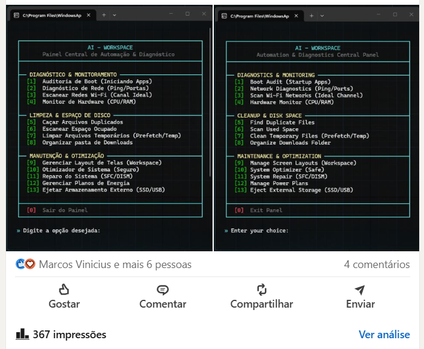
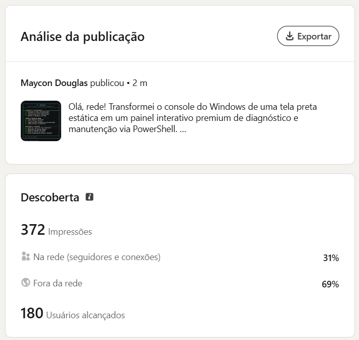

| Nome | R.A |
|---|
| Maycon Douglas Inácio Silva | H719CD3 |
3
1. Dados de Cadastro
Campus
Campus SJC Dutra - São José dos Campos (SP)
Aluno Participante
| Número | R.A. | Nome | Curso |
|---|
| 1 | H719CD3 | Maycon Douglas Inácio Silva | Análise e Desenvolvimento de Sistemas |
Turma: DS4A48
Atividade individual. O aluno respondeu integralmente pela concepção, desenvolvimento, documentação bilíngue, empacotamento do instalador e publicação da ferramenta.
Período
Ano: 2026 | Semestre: 4º | Desenvolvimento: 21/05/2026 a 13/06/2026 | Publicação: 13/06/2026
Área Temática e Projeto
TECNOLOGIA E PRODUÇÃO · Desenvolvimento de aplicativos/ software/ website para a comunidade, organizações não governamentais, etc.
Ação
Prestação de serviços (70 horas)
Público Beneficiário e Natureza da Contribuição
| Público Beneficiário | Usuários e técnicos de Windows, estudantes de TI e suporte técnico comunitário |
| Pessoas Impactadas | 180 pessoas (usuários únicos alcançados, apurados na análise da publicação) |
| Natureza | Voluntária e não remunerada — software gratuito, código aberto, sem anúncios e sem coleta de dados |
4
2. Descrição da Atividade
2.1 Descrição Geral da Atividade
A atividade consistiu no desenvolvimento e na disponibilização gratuita do
AI-Workspace, um painel central de diagnóstico, limpeza e manutenção
para o sistema operacional Windows, executado inteiramente no console via PowerShell e
distribuído em código aberto.
O problema atacado é concreto e cotidiano: manter um computador Windows saudável
exige percorrer utilitários dispersos pelo sistema — Gerenciador de Tarefas, Limpeza de
Disco, sfc, DISM, Planos de Energia, configurações de
inicialização — cada um com sua própria interface e sua própria curva de aprendizado.
Quem não é técnico não sabe onde procurar; quem é técnico perde tempo alternando entre
eles. O AI-Workspace reúne 13 ferramentas sob um único menu numerado, no
qual cada tarefa se resolve digitando um número.
Diagnóstico e Monitoramento
- [1] Auditoria de Boot: analisa os programas que iniciam com o
Windows, para diagnosticar lentidão na partida.
- [2] Diagnóstico de Rede: latência, rotas e portas TCP abertas
com os processos donos de cada uma.
- [3] Escanear Redes Wi-Fi: examina os canais das redes vizinhas e
sugere os canais livres em 2.4 GHz e 5 GHz.
- [4] Monitor de Hardware: telemetria de processador e memória em
tempo real.
5
2. Descrição da Atividade (continuação)
Limpeza e Espaço em Disco
- [5] Caçar Arquivos Duplicados: identificação por hash SHA-256,
com modo rápido (pasta do usuário) e profundo (unidade inteira).
- [6] Escanear Espaço Ocupado: mapeamento de consumo de disco,
também em dois modos.
- [7] Limpar Arquivos Temporários: remoção de caches e arquivos
órfãos de Prefetch e Temp.
- [8] Organizar Pasta de Downloads: classificação automática em
Imagens, Vídeos, Documentos, Compactados e Código.
Manutenção e Otimização
- [9] Gerenciar Layout de Telas: salva e restaura arranjos de
janelas do espaço de trabalho.
- [10] Otimizador de Sistema (Seguro): desativa telemetrias
intrusivas e remove bloatware, criando ponto de restauração antes de
agir.
- [11] Reparo do Sistema: checagem e restauração da Component
Store via
SFC e DISM.
- [12] Gerenciar Planos de Energia: lista e alterna os planos
ativos.
- [13] Ejetar Armazenamento Externo: ejeção segura de SSDs e
pendrives mesmo em uso, fechando handles de arquivo pela API nativa CIM/WMI
e controlando o AutoPlay.
6
2. Descrição da Atividade (continuação)
Decisões técnicas que orientaram o projeto
- Bilíngue de fato, não traduzido por cima. O menu existe em
português (
ajuda) e inglês (help), e o comando
help preserva o comportamento nativo do PowerShell quando recebe
parâmetros — help Get-Service continua funcionando. Uma ferramenta de
comunidade que quebra um comando padrão do sistema causa mais dano do que
benefício.
- Instalação em dois cliques ou por linha de comando. O instalador
copia o workspace para
C:\AI_Workspace e registra os comandos globais no
perfil do PowerShell. Há um caminho em Python e um fallback automático em
PowerShell para quem não tem Python — o público-alvo não deveria precisar instalar
uma linguagem para instalar um utilitário.
- Isolamento de processos. Cada script secundário roda em um
processo PowerShell dedicado, de modo que interromper uma tarefa com
Ctrl+C devolve o usuário ao menu em vez de derrubar o painel
inteiro.
- Compatibilidade tipográfica do console. Os arquivos usam UTF-8
com BOM e caracteres de caixa clássicos, e o alinhamento das bordas é calculado
dinamicamente para 56 colunas, independentemente do idioma. Isso evita o layout
quebrado em consoles com fontes bitmap legadas — situação comum em máquinas antigas,
que são justamente as que mais precisam da ferramenta.
7
2. Descrição da Atividade (continuação)
Volume verificável do trabalho
| Métrica | Valor |
|---|
| Scripts PowerShell | 15 |
| Linhas de PowerShell | 3.114 |
| Script auxiliar em Python | 84 linhas |
| Ferramentas no menu central | 13 |
| Idiomas suportados | 2 (PT/EN) |
| Commits no repositório | 40 |
| Etapas de desenvolvimento documentadas | 6 |
| Período de desenvolvimento | 21/05/2026 a 13/06/2026 |
O histórico de planejamento das seis etapas está versionado no próprio repositório,
o que torna auditável o processo de desenvolvimento, e não apenas o resultado final.
8
2. Descrição da Atividade (continuação)
A quem a ferramenta se destina, e por que isso caracteriza extensão
O Art. 1º do Regulamento de Extensão define a atividade como "as intervenções
que envolvem diretamente as comunidades externas à Instituição", e a ação de
Prestação de Serviços é descrita como contribuição "de forma voluntária e não
remunerada, para uma causa, organização ou comunidade".
O beneficiário desta atividade é a comunidade difusa, e não uma organização
intermediária. O AI-Workspace não foi desenvolvido para uma empresa, não integra
nenhum produto comercial e não possui modelo de receita: não há venda, assinatura,
anúncio, telemetria nem coleta de qualquer dado do usuário. O software foi publicado em
repositório de acesso irrestrito, sem cadastro e sem contrapartida, e qualquer pessoa com
um computador Windows pode instalá-lo e usá-lo sem pedir autorização a ninguém.
Por essa razão não há Carta de Apresentação nem entidade beneficiária a
declarar — e a ausência não é uma lacuna documental, é uma consequência direta da
natureza da entrega. A Carta de Apresentação serve para atestar que uma organização
terceira recebeu um serviço; quando o destinatário é o público em geral, não existe
representante para assiná-la. A comprovação equivalente, e mais verificável, é o alcance
efetivamente medido: 180 pessoas atingidas, 69% delas fora da rede de contatos do
autor, conforme os dados da própria plataforma reproduzidos na seção 3.
9
2.2 Descrição da Participação do Aluno
Maycon Douglas Inácio Silva (R.A. H719CD3)
Atuou de forma integral em todas as etapas, aplicando conhecimentos das disciplinas de
Programação Web e de Scripts, Sistemas Operacionais, Engenharia de
Software, Interface Homem-Computador e Metodologia Científica.
- Levantamento do problema: identificação das tarefas de manutenção
que mais consomem tempo e que estão dispersas em utilitários distintos do Windows,
definindo o escopo das 13 ferramentas.
- Desenvolvimento: codificação dos 15 scripts PowerShell (3.114
linhas) e do auxiliar em Python, incluindo o tratamento de casos difíceis como a
ejeção de dispositivos em uso via API CIM/WMI.
- Arquitetura de execução: decisão pelo isolamento de cada
utilitário em processo próprio, para que a interrupção de uma tarefa não derrube o
painel.
- Interface de console e acessibilidade tipográfica: implementação
do algoritmo de preenchimento dinâmico das bordas Unicode e adoção de UTF-8 com BOM,
garantindo legibilidade em consoles legados.
- Internacionalização: construção da camada bilíngue PT/EN,
preservando o comportamento nativo do comando
help.
- Empacotamento e instalação: desenvolvimento do instalador com
registro dos comandos globais no perfil do usuário e fallback automático
para quem não possui Python.
- Documentação: redação dos dois READMEs (português e inglês) e do
histórico de planejamento das 6 etapas, versionado no repositório.
- Publicação e acompanhamento: disponibilização do repositório
público e divulgação em rede profissional aberta, com apuração posterior das métricas
descritas na seção 3.
10
3. Conclusão e Resultados Alcançados
A ferramenta foi concluída, publicada em repositório público e divulgada em canal
aberto, alcançando público externo à Universidade. A atividade dispõe de
medição de alcance real, extraída da própria plataforma de publicação —
e os números não são uniformemente favoráveis.
3.1 Alcance Apurado
| Indicador | Valor | Leitura |
|---|
| Usuários únicos alcançados | 180 | É o número de pessoas — a base para "pessoas impactadas" |
| Impressões | 367 – 372 | Exibições; não equivale a pessoas |
| Reações | 7 | — |
| Comentários | 4 | — |
| Engajamentos totais | 11 | Soma de reações e comentários |
| Cliques no link do repositório | 2 | O indicador decisivo desta atividade — ver 3.3 |
| Compartilhamentos | 0 | Não houve redistribuição por terceiros |
| Salvamentos | 0 | Nenhum leitor arquivou a publicação |
| Envios diretos | 0 | Nenhum encaminhamento privado |
| Visualizações de perfil | 1 | — |
| Seguidores obtidos | 1 | — |
11
3. Conclusão e Resultados Alcançados (continuação)
Sobre a divergência nas impressões: a captura da publicação registra
367 impressões e o arquivo de exportação, consultado depois, registra
372. A diferença é o acúmulo entre as duas consultas. Ambos os números
aparecem nas comprovações da seção 4, e nenhum dos dois foi ajustado.
Sobre a leitura do bloco de engajamento: o arquivo exportado rotula
três linhas distintas como "Reações", com os valores 11, 7 e 2.
A primeira é o total do bloco (7 reações + 4 comentários + 0 compartilhamentos + 0
salvamentos + 0 envios = 11); a terceira é o contador de cliques no link,
confirmado pela linha seguinte, que traz o endereço do repositório associado ao mesmo
valor 2. Tomar o 11 como reações inflaria o indicador em 57%. A tabela da
página anterior usa a leitura verificada.
3.2 Perfil de Quem Foi Alcançado
As duas tabelas a seguir reproduzem integralmente o bloco demográfico
do arquivo exportado, sem seleção.
| Dimensão | Categoria | % |
|---|
| Cargo | Engenheiro de software | 6% |
| Analista de TI | 4% |
| Desenvolvedor full stack | 3% |
| Subtotal declarado | 13% |
| Localidade | São José dos Campos, SP | 19% |
| São Paulo e Região | 9% |
| Rio de Janeiro e Região | 3% |
| Subtotal declarado | 31% |
| Nível de experiência | Iniciante | 55% |
| Sênior | 11% |
| Treinamento | 3% |
| Subtotal declarado | 69% |
12
3. Conclusão e Resultados Alcançados (continuação)
| Dimensão | Categoria | % |
|---|
| Setor | Serviços de tecnologia da informação | 16% |
| Desenvolvimento de software | 16% |
| Tecnologia, Informação e Internet | 13% |
| Subtotal declarado | 45% |
| Tamanho da empresa | Mais de 10.001 funcionários | 14% |
| 1.001 a 5.000 funcionários | 14% |
| 51 a 200 funcionários | 9% |
| 11 a 50 funcionários | 8% |
| 201 a 500 funcionários | 5% |
| 2 a 10 funcionários | 5% |
| 501 a 1.000 funcionários | 4% |
| 5.001 a 10.000 funcionários | 3% |
| Subtotal declarado | 62% |
Por que nenhuma coluna fecha 100%: a plataforma divulga apenas as
categorias de maior peso em cada dimensão e omite a cauda. Os subtotais em itálico
registram quanto do público está efetivamente descrito. Nenhum percentual foi normalizado
nem redistribuído.
13
3. Conclusão e Resultados Alcançados (continuação)
Origem do alcance — dado que não consta do arquivo
exportado, apurado na tela de análise reproduzida na Figura 2:
| Origem | % |
|---|
| Fora da rede de contatos do autor | 69% |
| Na rede (seguidores e conexões) | 31% |
Três leituras do perfil alcançado:
- 69% do alcance veio de fora da rede de contatos do autor — a
proporção mais alta já registrada nas publicações do projeto. É público externo no
sentido literal do conceito de extensão.
- 58% do público não é sênior (55% Iniciante e 3% em Treinamento),
contra 11% de Sênior. O painel foi construído justamente para quem não domina os
utilitários dispersos do Windows.
- Os 45% de setor declarado são inteiramente de tecnologia (16%
serviços de TI, 16% desenvolvimento de software, 13% Tecnologia/Informação/Internet),
e os três cargos declarados também. Aqui isso é alinhamento, não desvio:
uma ferramenta de console em PowerShell tem público técnico por natureza, e atingir
profissionais de TI iniciantes é exatamente o alvo pretendido.
14
3. Conclusão e Resultados Alcançados (continuação)
3.3 Leitura Crítica dos Resultados
- O alcance foi o maior do projeto, mas o engajamento por leitor caiu.
11 engajamentos sobre 180 pessoas equivalem a 6,1%.
- Apenas 2 pessoas clicaram no link do repositório. Este é o dado
mais importante e o mais desfavorável: de 180 pessoas alcançadas, 178 não
foram ao repositório. Para um e-book, ser lido no próprio feed já é
entrega; para uma ferramenta, o valor só se realiza quando alguém a
instala. A taxa de clique de 1,1% significa que a publicação
comunicou a existência do trabalho, mas praticamente não converteu em uso.
- A propagação foi nula outra vez. Zero compartilhamentos, zero
salvamentos e zero envios diretos. É a segunda publicação consecutiva com os três
indicadores zerados — isso deixou de ser acaso e passou a ser padrão,
o que desloca a causa provável do conteúdo para o formato e o canal de
distribuição.
- A conversão em vínculo foi mínima: 1 visualização de perfil e 1
seguidor sobre 180 pessoas.
15
3. Conclusão e Resultados Alcançados (continuação)
3.4 Comparação com a Publicação Anterior do Autor
Como as duas publicações saíram do mesmo perfil, na mesma plataforma e no mesmo
semestre, a comparação isola o efeito do formato:
| Indicador | E-book (18/05/2026) | AI-Workspace (13/06/2026) |
|---|
| Usuários alcançados | 118 | 180 (+53%) |
| Engajamentos | 22 | 11 |
| Taxa de engajamento | 18,6% | 6,1% |
| Alcance fora da rede | 57% | 69% |
| Público não sênior | 52% | 58% |
| Compartilhamentos / salvamentos / envios | 0 / 0 / 0 | 0 / 0 / 0 |
O AI-Workspace alcançou 53% mais pessoas e engajou três vezes menos por
pessoa. A hipótese mais simples é a diferença de esforço exigido do leitor: o
e-book era consumível no próprio feed, enquanto a ferramenta exige sair da
plataforma, abrir um repositório e instalar software. Não há dado que comprove essa
explicação — ela fica registrada como hipótese.
A comparação de cliques não se aplica: o e-book foi publicado como
documento anexo, sem link externo, de modo que seu contador de cliques ser zero não é
resultado, é ausência de link.
16
3. Conclusão e Resultados Alcançados (continuação)
3.5 Lacuna Identificada na Autoavaliação, e Sua Correção
A revisão desta atividade expôs uma inconsistência entre o que o projeto se propunha e
o que ele juridicamente permitia. Até 28/08/2026, o repositório era
público mas não declarava licença — não havia arquivo
LICENSE nem menção a licenciamento em nenhum dos dois READMEs.
A consequência não é formal, é prática: na ausência de licença explícita vale o
direito autoral padrão, de modo que terceiros podiam ver o código, mas
não estavam autorizados a copiar, modificar ou redistribuir. Para uma
atividade cuja justificativa é a contribuição voluntária de software à
comunidade, isso significava um material tecnicamente acessível e juridicamente
fechado — a intenção declarada não se sustentava no plano legal.
Correção aplicada em 28/08/2026: o repositório passou a adotar a
Licença MIT, com o arquivo LICENSE na raiz e uma seção de
licenciamento acrescentada aos dois READMEs (português e inglês). A partir dessa data,
qualquer pessoa ou instituição pode usar, copiar, modificar, distribuir e sublicenciar a
ferramenta — inclusive para fins comerciais — bastando preservar o aviso de
copyright.
O registro fica aqui na forma em que ocorreu: a falha foi encontrada pela
própria autoavaliação da atividade de extensão, e corrigida em decorrência dela.
É o mesmo mecanismo que, na prestação de serviços do outro projeto do autor, converteu
erros observados em testes de usabilidade em melhorias implementadas no software.
17
3. Conclusão e Resultados Alcançados (continuação)
3.6 Alinhamento aos Objetivos de Desenvolvimento Sustentável
- ODS 4 (Educação de Qualidade): documentação bilíngue e menu
autoexplicativo que ensinam, pelo uso, quais utilitários de manutenção existem no
Windows e para que servem.
- ODS 8 (Trabalho Decente e Crescimento Econômico): ferramenta
gratuita de produtividade e diagnóstico para técnicos de suporte e profissionais de
TI iniciantes, que compõem 58% do público alcançado.
- ODS 9 (Indústria, Inovação e Infraestrutura): prolongamento da
vida útil de equipamentos por manutenção preventiva, com atenção explícita à
compatibilidade com consoles e máquinas legadas.
- ODS 10 (Redução das Desigualdades): distribuição sem custo, sem
anúncios e sem coleta de dados, com instalação em dois cliques para não exigir
conhecimento prévio de linha de comando.
18
3. Conclusão e Resultados Alcançados (continuação)
3.7 Local onde a atividade foi realizada
O desenvolvimento, os testes e a documentação foram realizados em ambiente de estudo
do aluno em São José dos Campos (SP), entre 21/05/2026 e 13/06/2026. A entrega à
comunidade ocorreu em meio digital aberto: repositório público no GitHub e
divulgação em rede profissional aberta, sem restrição de acesso, cadastro ou
pagamento.
3.8 Considerações Finais
- Dificuldades enfrentadas: o obstáculo técnico mais custoso foi a
ejeção segura de dispositivos externos em uso — exigiu fechar handles de
arquivo pela API nativa CIM/WMI e controlar o AutoPlay, e consumiu uma etapa inteira
de desenvolvimento. O obstáculo de compatibilidade foi o alinhamento das bordas do
console entre dois idiomas e em fontes bitmap legadas, resolvido por cálculo dinâmico
de preenchimento em vez de espaçamento fixo.
- Sugestões: (1) publicar um vídeo curto de demonstração junto
ao anúncio, já que 178 das 180 pessoas alcançadas não clicaram para ver o
repositório; (2) medir o alcance em dois momentos distintos, para separar o impulso
inicial do consumo de cauda longa; (3) divulgar novamente a ferramenta agora que ela
está licenciada, já que só a partir de 28/08/2026 o material pode ser legalmente
reaproveitado por escolas e cursos técnicos.
- Observações: o histórico de planejamento das 6 etapas está
versionado no próprio repositório, o que torna o processo de desenvolvimento
auditável por qualquer pessoa — e não apenas o resultado final.
19
4. Comprovação
A comprovação fundamenta-se no software publicado em repositório aberto, no histórico
de commits versionado e nas capturas da análise oficial de alcance fornecida pela
plataforma de publicação.
Endereços públicos do material:
- Código-fonte, documentação bilíngue e histórico de planejamento:
https://github.com/MayconDIS/AI_Workspace
- Publicação e divulgação:
https://www.linkedin.com/feed/update/urn:li:activity:7471624197593587712/
- Dados brutos de alcance: arquivo de exportação da própria
plataforma, mantido junto a este relatório.
Comprovação 1 — Painel central em português e inglês
Figura 1 – O painel com as 13 ferramentas em três categorias, nas duas versões de idioma, e o registro de 367 impressões e 4 comentários

Fonte: Captura da publicação do autor (2026) — acervo do autor.
20
4. Comprovação (continuação)
Comprovação 2 — Análise oficial de alcance da publicação
Figura 2 – Tela de análise da publicação: 372 impressões, 180 usuários alcançados e a divisão entre alcance dentro (31%) e fora (69%) da rede de contatos

Fonte: Painel de análise da plataforma de publicação (2026) — acervo do autor.
21
4. Comprovação (continuação)
Comprovação 3 — Volume de código, verificável no repositório
| Script | Linhas | Script | Linhas |
|---|
setup-workspace.ps1 | 874 | organizar-downloads.ps1 | 170 |
eject_drive.ps1 | 250 | otimizador-windows.ps1 | 150 |
cacar-duplicatas.ps1 | 238 | gerenciar-energia.ps1 | 138 |
scanner-wifi.ps1 | 238 | instalar-ajuda.ps1 | 132 |
scanner-espaco.ps1 | 227 | monitor-hardware.ps1 | 116 |
ajuda.ps1 | 200 | limpar-temporarios.ps1 | 93 |
reparar-sistema.ps1 | 169 | diagnostico-rede.ps1 | 83 |
| | auditoria-boot.ps1 | 36 |
| Script auxiliar em Python | 84 | Total PowerShell | 3.114 |
Os números acima são obtidos por contagem direta de linhas dos arquivos do
repositório público, e podem ser reproduzidos por qualquer avaliador.